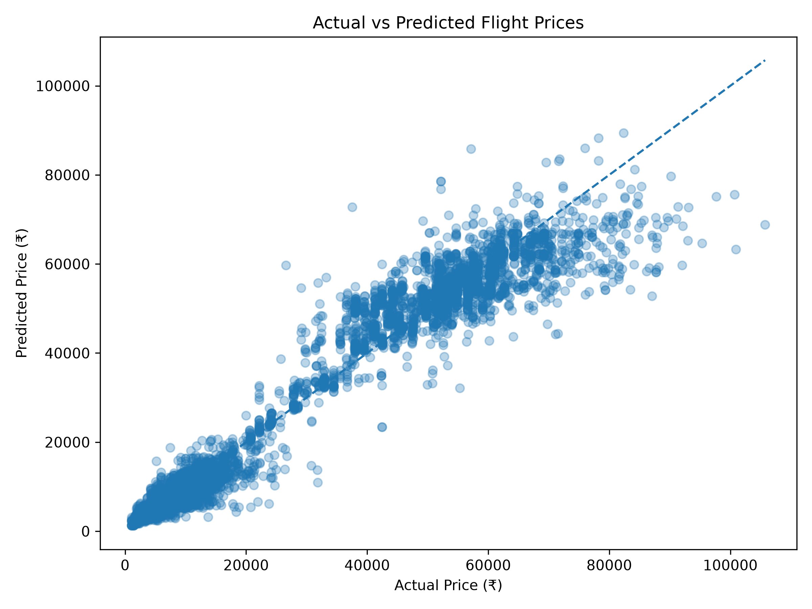

1.Question
Given the details of a flight search (route, airline, class, stops, departure time, duration and how many days remain before departure), how accurately can we predict the ticket price in rupees?
This is a regression problem. We also ask a stricter follow-up: does the model still work on city pairs it was never trained on?
2.Data
The Kaggle "Flight Price Prediction" dataset (Clean_Dataset.csv) has 300,153 flights, 11 columns and no missing values. It covers 6 airlines and 6 metro cities (Delhi, Mumbai, Bangalore, Kolkata, Hyderabad, Chennai). Days left before departure range from 1 to 49.
| Column | Type | Meaning |
|---|---|---|
| airline, source_city, destination_city | category | Who flies, and between which cities |
| departure_time, arrival_time | category | Six time-of-day buckets |
| stops | category | zero, one, two_or_more |
| class | category | Economy or Business |
| duration, days_left | number | Hours in the air; days between search and departure |
| price | target | Ticket price in ₹ (₹1,105 to ₹123,071, median ₹7,425) |
Prices come in two very different groups: Economy has a median of about ₹5,772 and Business about ₹53,164. This is the single biggest fact about the data.


3.Preprocessing
- Dropped the row-index column and the
flightcode (an ID, not a feature). - One-hot encoded the 7 categorical columns, giving 35 binary columns.
- Standardised
durationanddays_left(mean 0, standard deviation 1). - Everything is wrapped in a scikit-learn
Pipeline, so the encoder and scaler are fitted on training data only, which avoids leaking test information.
4.Baseline and methods
| Model | Role | Idea |
|---|---|---|
| Median by class | Naive baseline | Predict the median training price for Economy or Business. No learning from other features. |
| Linear Regression | Simple model | Price as a weighted sum of the features. |
| Random Forest | Tree ensemble | Averages many decision trees (30 trees, depth 15 in the grouped tests). |
| Gradient Boosting | Final model | Adds 150 small trees one at a time, each fixing the previous errors. |
5.Evaluation
We report MAE (average miss in ₹), RMSE (like MAE but punishes big misses) and R² (share of price variation explained). We use three validation setups, from easy to strict:
| Setup | How the data is split |
|---|---|
| Random split | Random 80/20 split of a 50,000-row sample. The same route appears in both train and test, so it is the easiest test. |
| Held-out routes | One 80/20 split where whole city pairs (both directions together) are kept out of training. |
| 5-fold route CV | GroupKFold with 5 folds, each fold holding out different city pairs. This is the strictest and most reliable, and it is what we used to pick the final model. |
6.Results
Interactive: compare the models. Choose a validation setup and a metric to see how the ranking and the gap change.
Gradient Boosting averages ₹3,163 MAE and R² 0.941 in 5-fold route CV, ahead of Random Forest (₹3,342) and Linear Regression (₹4,688). Across the folds the MAE varies by about ₹430, so the gap to Random Forest is small but consistent.
Random Forest looks best on the easy random split, but Gradient Boosting wins once routes are held out. We chose Gradient Boosting because we trust the stricter tests more.

7.Errors
Interactive: how often is the model close enough? Drag the slider to choose how far off you can accept the prediction to be.
Based on the 10,000 test flights in results/prediction_errors.csv (Random Forest, random split). The typical (median) miss is about ₹1,051.
| Actual price | Flights | Average miss |
|---|---|---|
| Under ₹5,000 | 2,598 | ₹770 |
| ₹5,000 to 10,000 | 3,117 | ₹1,031 |
| ₹10,000 to 20,000 | 1,065 | ₹2,172 |
| ₹20,000 to 40,000 | 539 | ₹4,965 |
| Over ₹40,000 | 2,681 | ₹4,730 |
Pattern: absolute errors grow with price, so expensive flights are missed by thousands of rupees. In relative terms, Economy errors are larger (MAPE 18.0%, MAE ₹1,163) than Business (MAPE 9.0%, MAE ₹4,700).


8.Limitations
- Historical snapshot. The data is not live. Real prices also depend on holidays, fuel costs, seats left and promotions, none of which are in the data.
- Limited coverage. Only 6 metro cities, 6 airlines and 1 to 49 days before departure. Other routes and booking windows are outside what the model has seen.
- Arrival time shortcut on this website. The model uses arrival time as a feature, but the fare predictor page asks only for departure time and sets arrival time equal to it, so website estimates can be less accurate than the reported scores.
- Scores depend on the split. R² falls from about 0.97 (random split) to about 0.91 (held-out routes), so the easy test overstates real performance.
- Sampling. Model comparisons use a 50,000-row sample. The final deployed model is trained on all rows, so it has no separate held-out score.
- Expensive flights. Misses of ₹5,000 or more are common above ₹20,000.
9.Conclusion
A Gradient Boosting model predicts domestic flight fares with an average error of about ₹3,200 (R² about 0.94) on unseen routes. That beats a median-by-class baseline (₹5,488 MAE on the same held-out-routes split) and Linear Regression. Travel class explains most of the price, and the extra features (duration, days left, airline) refine it. The estimates are useful for a rough budget, but they are not live airline prices.
10.Reproduction steps
git clone https://github.com/pellurusaranya-byte/Flight-fare-prediction.git cd Flight-fare-prediction python -m venv .venv .venv\Scripts\activate # macOS/Linux: source .venv/bin/activate pip install -r requirements.txt python notebooks/05_model_comparison.py # random-split comparison python notebooks/10_robust_validation.py # held-out routes python notebooks/11_group_cross_validation.py # 5-fold route CV python notebooks/14_naive_baseline.py # naive baseline python notebooks/12_train_final_model.py # trains the final model python export_for_pages.py # updates the website's model files cd website && python app.py # optional: run the Flask version
All outputs are saved in results/. The website in docs/ runs the exported model in the browser, so it needs no server.